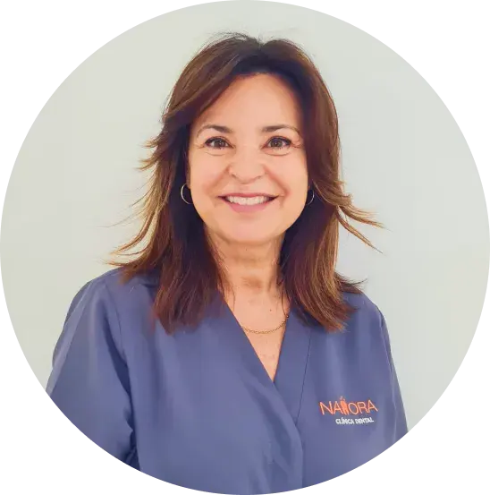
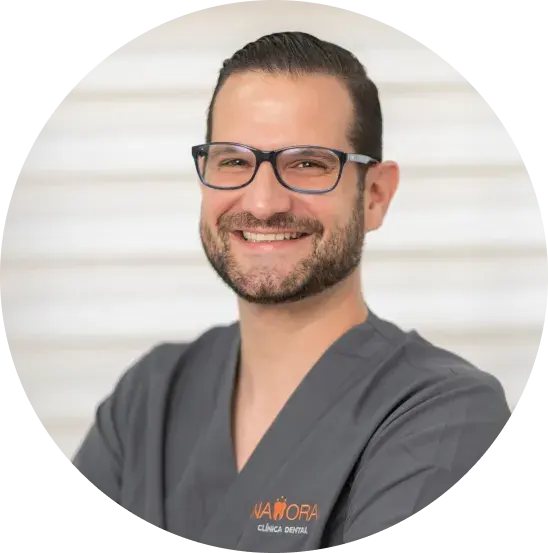
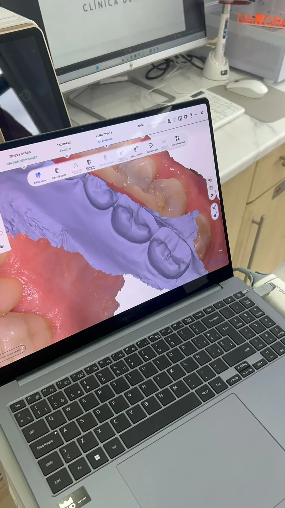

Namora Clínica Dental
Dra. Luz Marina López Acevedo
Odontología integral y estética dental
Atención cercana, planificación de tratamientos y visión global de la salud bucodental.
Combinamos experiencia clínica, planificación personalizada y comunicación clara para que cada paciente entienda su tratamiento y se sienta acompañado.
Un diseño más limpio para presentar al equipo con jerarquía visual, fotografía, área de trabajo y valores de atención.

Atención cercana, planificación de tratamientos y visión global de la salud bucodental.

Acompañamiento del paciente, diagnóstico y tratamientos orientados a función y estética.

Su cercanía, profesionalidad y dedicación hacen que cada paciente se sienta acompañado, informado y tranquilo durante todo su tratamiento.
Más allá del tratamiento, cuidamos la experiencia: puntualidad, privacidad, información comprensible y seguimiento.
Antes de proponer un tratamiento analizamos salud dental, encías, estética, mordida y expectativas.
Te contamos las opciones para que puedas decidir con seguridad y sin presión.
Controlamos la evolución y pautamos cuidados para mantener los resultados en el tiempo.
El equipo clínico valora cada caso y te acompaña durante el diagnóstico, la explicación del tratamiento y el seguimiento.
Sí. La comunicación con el paciente es parte del proceso para que entiendas opciones, tiempos y cuidados.
Sí. La clínica cuenta con recursos comoAparato de rayosX, ortopantomografia y CBCT dental para mejorar la planificación y la experiencia del paciente.